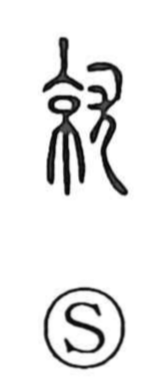

就

Kun: tsuku, tsukeru | On: shuu, ju
to take up a post ・ assume ・ set about ・ engage in
Explanation
This character joins 京 and 尤. In early forms, 京 portrays the great arched city gate crowned with a watchtower, the keikan, while 尤 shows a dog fallen dead, serving here as the sacrificial victim. Together they depict the completion rite held when the watchtower is finished: the blood of the offering is poured or smeared to purify and drive away malign forces. From this image of bringing construction to realization (seijou), the sense broadened to “become,” and, by the logic of an inaugural ceremony that begins one’s tenure, to “take up” or “assume” a post and “set about” an undertaking.